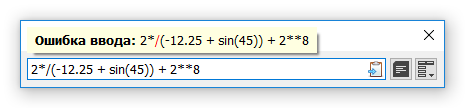

Во время вычисления могут произойти разного рода ошибки. В большинстве случаев, при ошибке ввода, математической ошибки или специфической ошибки аргумента, пользователь оповещается всплывающей подсказкой как в примере ниже (смотр. другой пример ошибки в разделе Функции).

Сообщение ошибки ввода.
В случае непредвиденной ошибки, в папке с программой будет создан файл «error.log», который можно отправить как баг-репорт (смотр. раздел О программе или О программе в Меню).